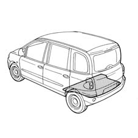
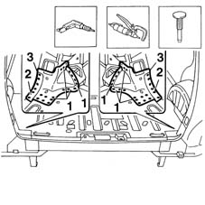
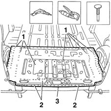
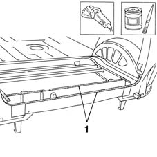
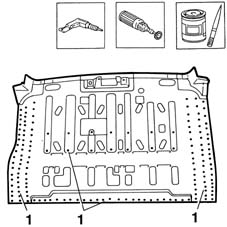
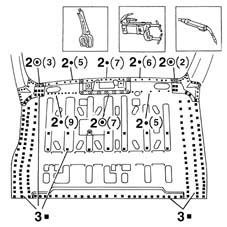
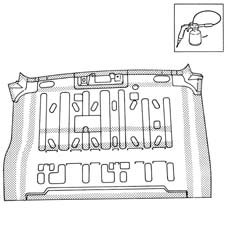
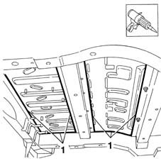
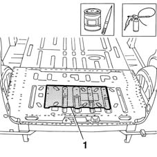

7210B55 R.R. BOOT FLOOR
- Path
- Procedures > 72 PANELS AND FRAME > 7210 REMOVING REFITTING > 7210B structure elements-central and rear part > 7210B55 R.R. BOOT FLOOR
- Kind
- repair procedure (removal / refitting; the operation number is the code)
- Applies to
- all engines; all production periods
- Interactive page
- https://sloeber94.github.io/elrnDB-fMltpl/en/#/2892314
Applies to: all engines; all production periods
 Removing
Removing
 Refitting
RefittingMove all fouling parts.
Check if any of the connected parts are deformed by checking body alignment dimensions. Use appropriate measurement tools (reference rigs, templates or gauges).
Straighten the body if necessary.

Applies to: all engines; all production periods
1. Drill out the spot welds on the side reinforcements shown in the figure.
2. Use a chamfering machine to remove the spot welds on the side reinforcements shown in the figure.
Using a chisel and hammer remove the spot welds ground previously.
3. Remove the side reinforcements.

Applies to: all engines; all production periods
1. Drill out the spot welds shown in the figure.
2. Use a chamfering machine to remove the weld spots shown in the figure.
Use a chisel and hammer to remove the spot welds ground previously.
3. Remove the load compartment floor.

Applies to: all engines; all production periods
Refitting
RemovingStraighten the panel edges using a mallet and profiled stake.
Use a grinding wheel to remove the spot weld residues.
1. Apply the electroweldable paint finish to the areas shown in the figure.

Applies to: all engines; all production periods
1. Drill equidistant holes as shown in the figure.
Use a rotary brush to remove the corrosion-proofing from around the entire inner and outer edge of the part.
2. Apply the electroweldable paint finish to edges in contact with the car.

Applies to: all engines; all production periods
1. Position the load platform floor pan on the car and secure using self-locking grippers or Parker screws.
2. Use a spot welder and weld the areas shown in the figure.
3. Use a MIG welder and fill weld the points shown in the figure.

Applies to: all engines; all production periods
Correct any deformations in the panel using a profiled stake and mallet.
Use a grinding wheel to level weld residues and remove.
1. Apply rust-proofing to newly welded areas.

Applies to: all engines; all production periods
1. Seal the joint lines between the part and the car using sealant.
Reapply the PVC treatment.

Applies to: all engines; all production periods
1. Apply sound-deadening panels.
Paint the load compartment floor (according to the specified cycle).
Apply wax.

Applies to: all engines; all production periods
Refit all fouling parts.